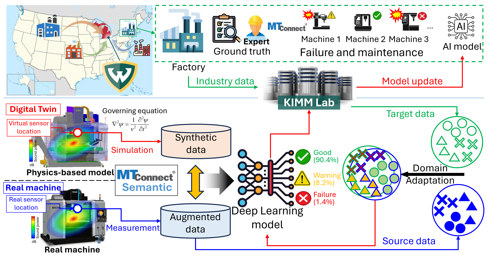
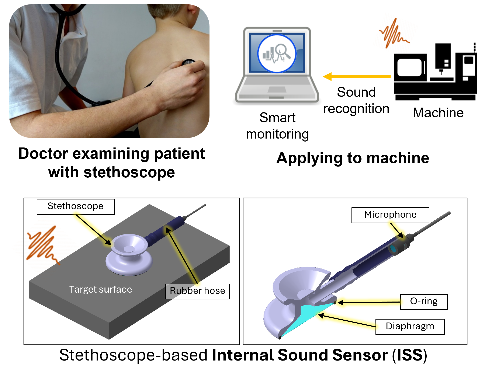
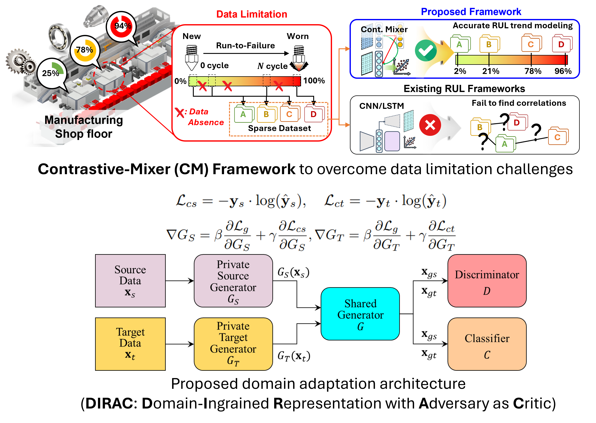
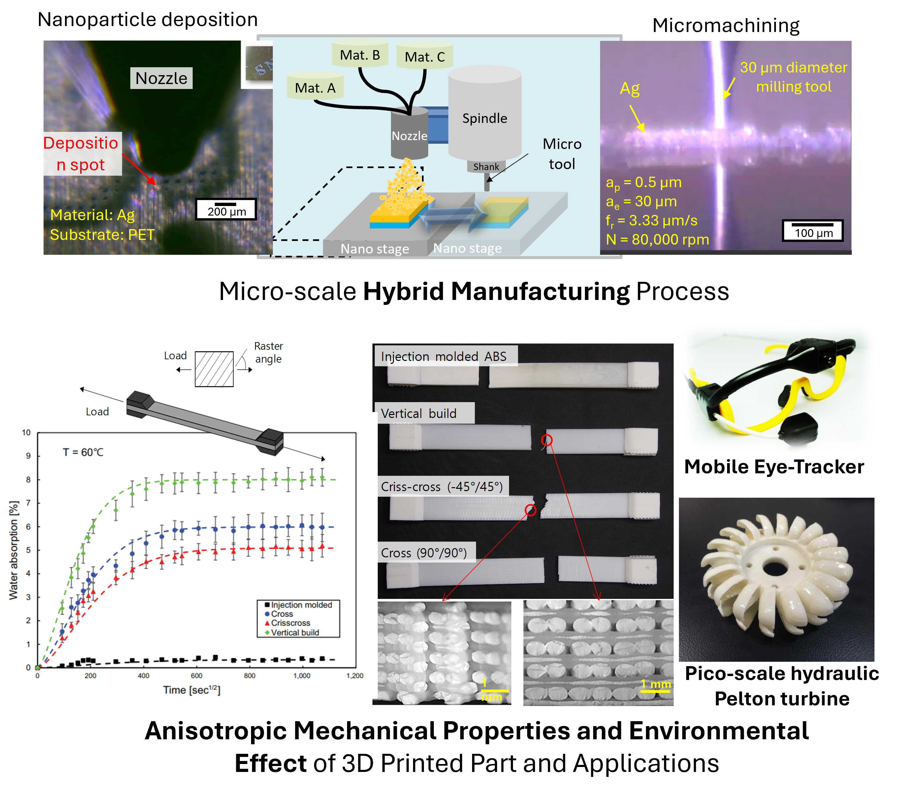

Research Overview

The Knowledge-based Intelligent Monitoring and Manufacturing (KIMM) Lab develops intelligent manufacturing systems by integrating AI, industrial data infrastructure, multimodal sensing, digital twins, and manufacturing knowledge for real-world industrial applications.
In the era of Industry 4.0 and AI, manufacturing systems face numerous challenges including limited data availability, heterogeneous machines and environments, domain shift, and deployment constraints. Our research focuses on developing practical AI approaches for manufacturing by combining data-driven methods with manufacturing knowledge, sensing, and industrial system understanding.
Research Foci

Machine Sound Recognition & Intelligent Monitoring
We investigate machine sound recognition and multimodal sensing for intelligent manufacturing monitoring and diagnostics. Our research integrates machine learning, sensing, manufacturing knowledge, and industrial data systems to enable robust machine understanding, anomaly detection, condition monitoring, and interoperable intelligent manufacturing systems.
- Machine sound recognition and machine understanding
- Multimodal sensing and sensor fusion
- Acoustic, vibration, and industrial signal analytics
- Manufacturing data integration and interoperability (e.g., MTConnect, OPC UA)

AI for Manufacturing: Data Augmentation, Synthetic Data & Domain Adaptation
We develop AI frameworks for manufacturing systems with emphasis on practical challenges including limited data availability, domain shift, and real-world deployment. Our work explores synthetic data generation, data augmentation, digital twins, domain adaptation, and robust learning methods for industrial environments.
- Synthetic and augmented manufacturing data
- Domain adaptation and transfer learning
- Digital twins and physics-informed deep learning
- Data-centric and deployable manufacturing AI

Advanced Manufacturing, Materials & Process Characterization
We investigate advanced manufacturing technologies, materials behavior, and manufacturing process characterization. Our work spans additive manufacturing, hybrid and micro-scale manufacturing, process–structure–property relationships, and data-driven understanding of manufacturing systems.
- Additive, hybrid, and micro manufacturing
- Materials and process behavior characterization
- Process–structure–property relationships
- Manufacturing performance and reliability analysis